龙隐·代驾之王
第一章：深夜接单
没人知道，这个开着二手雅阁的代驾司机，
曾经是让敌人闻风丧胆的传奇。
代号：龙隐。
现在，他只想安安静静地……创业。
↓ 向下滑动开始阅读 ↓
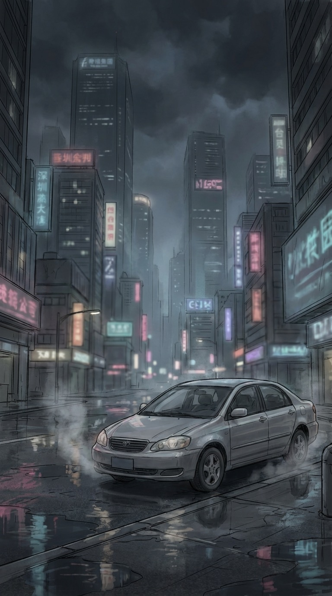
【远景 · 平视 · 缓慢推进】深圳·南山区·深夜
凌晨一点半。深圳南山区的街道湿漉漉的，霓虹灯在积水中碎成一片片光斑。
一辆不起眼的银色雅阁停在路边，代驾灯牌亮着微弱的光。
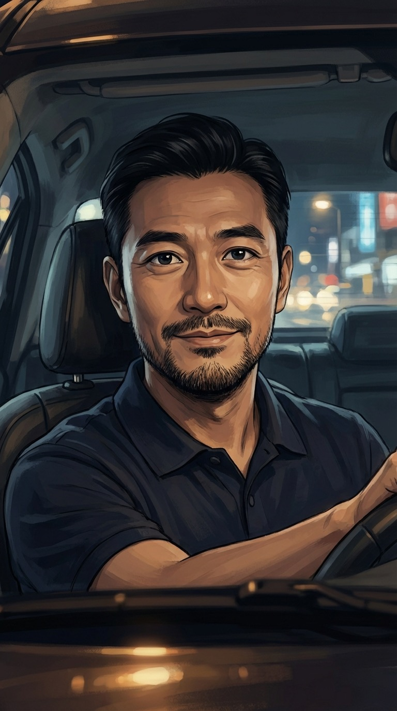
【特写 · 平视 · 固定】车内
车内，一个络腮胡的男人安静地坐在驾驶座。
黑色短发向后梳得一丝不苟，大眼睛在仪表盘的微光中显得格外深邃。商务休闲的深色polo衫，看起来不太像个代驾司机。
（今天第七单了。再跑两单，这个月房租就够了。）
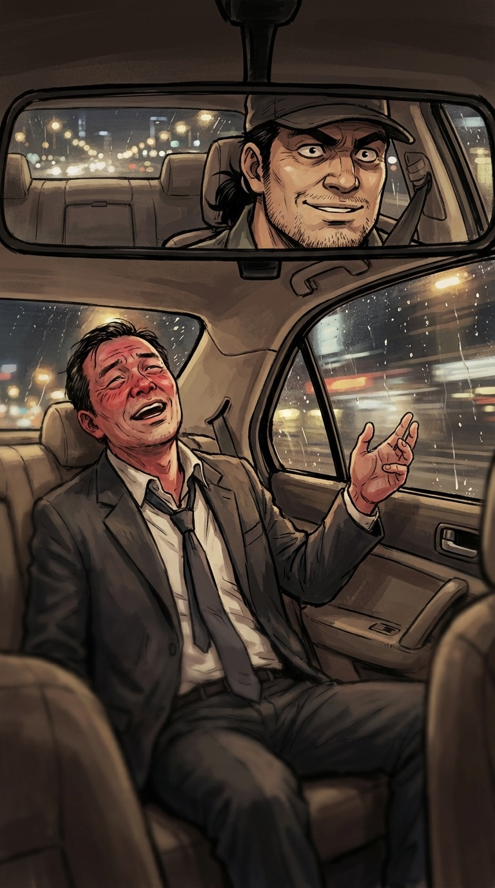
【中景 · 后座视角 · 固定】车内后座
后座的投资人喝得满脸通红，领带歪到一边，挥舞着手臂吹嘘个不停。
"我跟你说啊，上个月我们投了三家AI公司，最少的一家估值两个亿！"
"现在的AI赛道，你不投就是傻！懂不懂？"
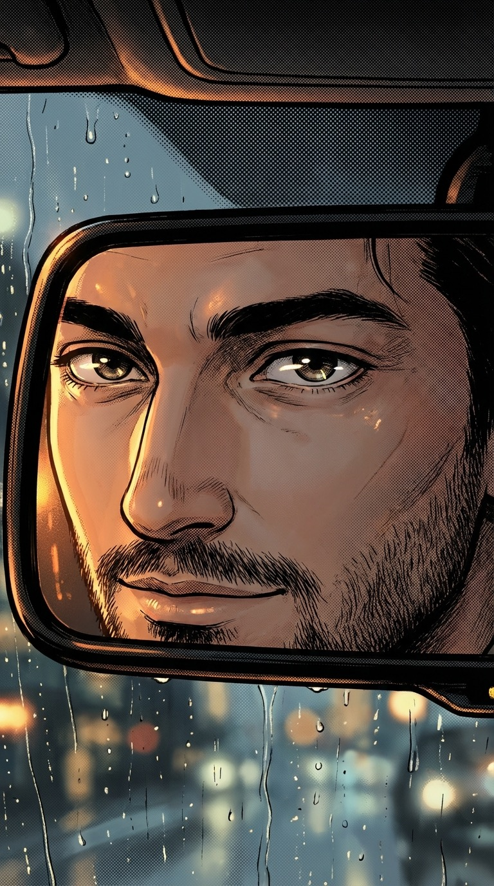
【极特写 · 后视镜反射 · 固定】后视镜中的眼神
后视镜里，朱江的眼神闪过一丝玩味。
（你们基金上个月给我发的term sheet，我看都没看就拒了。）
（估值两个亿？你投的那家，CTO上个月刚跑路。）
"是是是，王总说得对。"
情绪：隐忍的自嘲式幽默——月入三千的代驾司机，比月入三百万的投资人更懂这个行业。
【远景 · 跟移 · 平稳】别墅区入口
车子驶入华侨城的别墅区。梧桐树在月光下投射出斑驳的影子。
投资人终于在后座睡着了，鼾声如雷。
（有钱人的烦恼是投不出去钱，没钱人的烦恼是活不下去。我的烦恼比较特殊——我两种都有。）
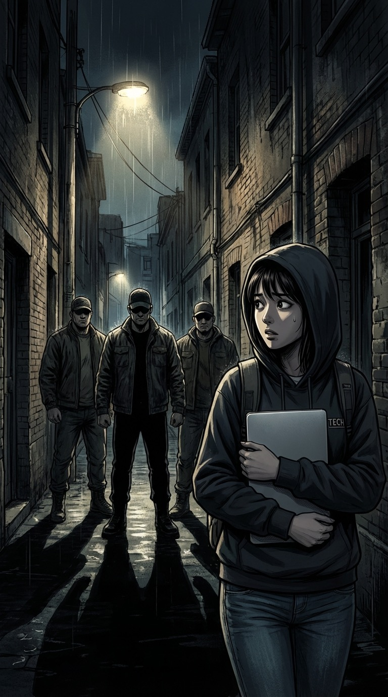
【中景 · 微仰 · 固定】别墅区旁小路
送完投资人，往回开的路上。一条窄路被堵住了。
三个混混把一个年轻女孩逼到墙角。女孩穿着程序员标配的卫衣牛仔裤，死死抱着笔记本电脑，眼里全是恐惧。
混混头子："哟，美女这么晚一个人？电脑借我看看呗？"
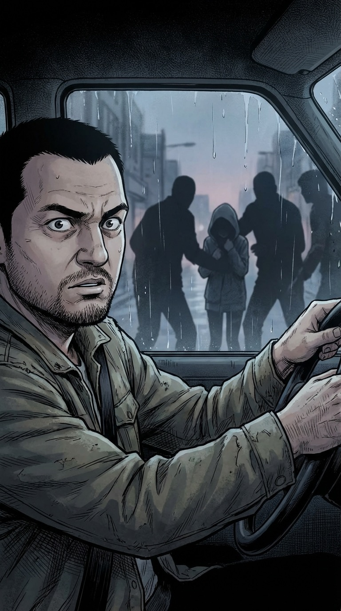
【主观视角 · 车内向外 · 固定】驾驶座视角
朱江的手握紧了方向盘。
他的眼神在零点三秒内完成了变化——从随意到锐利，像刀尖出鞘。
（三个人。没有武器。站位松散，没受过训练。领头的右脚习惯性前移，重心偏右。）
（职业病又犯了。）
⚡ 决策点 1：混混堵路
A. 报警，等警察来处理（理性安全）
B. 下车，用代驾司机身份交涉（低调解围）
C. 直接出手制服混混（暴露实力）
✅ 朱江的选择：B → 被迫升级为C
先低调交涉，交涉无果再出手。
🧠 灵魂解析
菩萨心肠——不想伤人，能和平解决最好。但霹雳手段——底线被触碰绝不退缩。朱江不会选A（太被动，女孩等不了），不会直接选C（不必要暴露），会先用嘴解决，解决不了再用手。
暴露偏好：朱江的冲突处理模式——先礼后兵，但底线清晰。
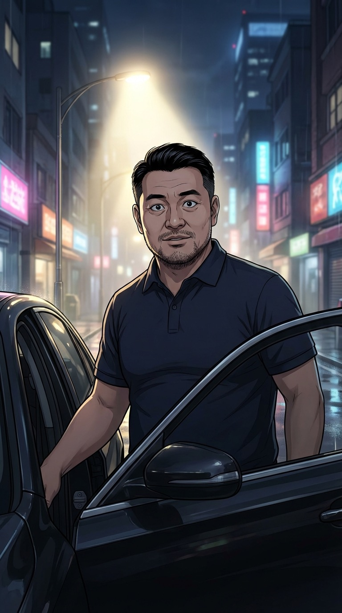
【全景 · 逆光 · 缓推】车旁
朱江推开车门，慢悠悠地走过去。
动作很随意，但每一步的步幅都精确得不像普通人。
"几位兄弟，让一下路呗，我这代驾还得赶下一单。"
语气：完全的代驾司机语调，卑微中带着讨好。但眼神没有笑。
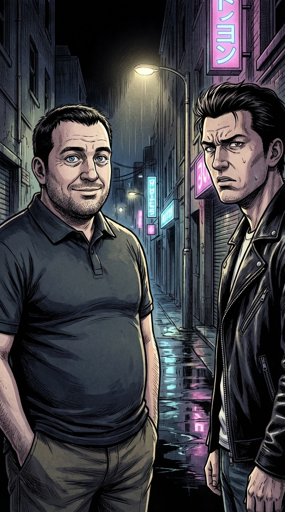
【中景 · 正面对切 · 固定】对峙
混混头子："代驾？滚一边去，轮得到你管？"
朱江双手插兜，站在原地没动。表情很友好，像是在问路。
但混混头子莫名其妙打了个寒颤——面前这个矮壮的代驾司机，给他一种说不上来的压迫感。
"那个……要不这样，大家都散了？大半夜的，明天还得上班。"
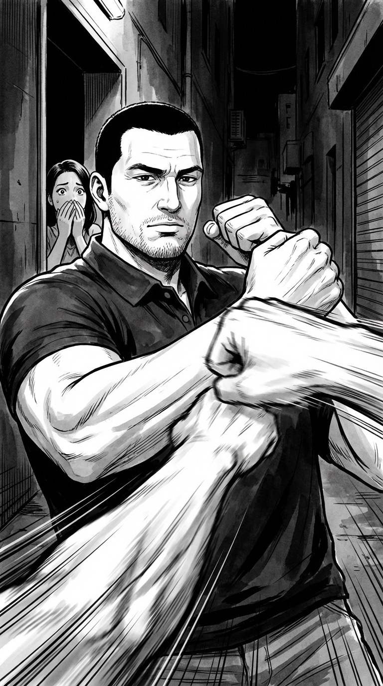
【动态特写 · 仰拍 · 速度线】交锋瞬间
混混的拳头挥过来。
朱江侧身，左手托住对方小臂外侧，右手顺势压住肘关节。整个动作精准到像做了一万遍。
三秒。三个人。全部放倒。
（力道控制：40%。骨折概率：0%。疼痛等级：够他们记住这次教训。）
（……我是不是该去看看手有没有生锈。三秒有点慢了。）
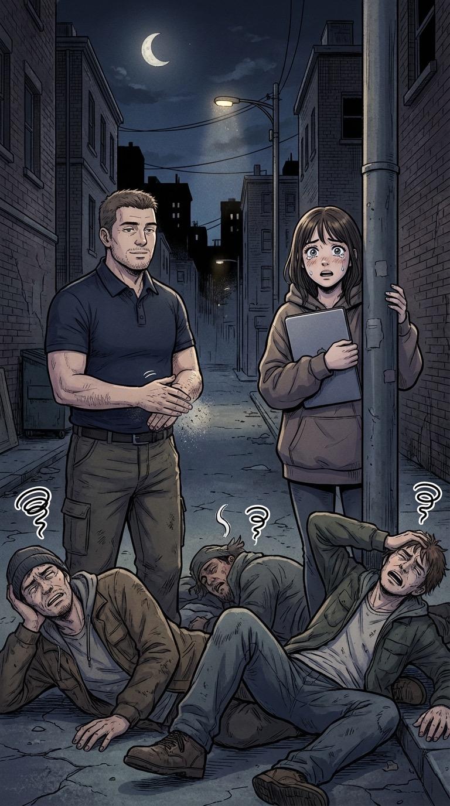
【全景 · 俯拍 · 固定】街道
三个混混在地上哀嚎。朱江拍了拍手，甚至没有喘气。
女孩呆呆地看着他，嘴巴张成了O型。
女孩："你……你是代驾？"
"对，代驾。"朱江挠了挠后脑勺，"偶尔也代打。"
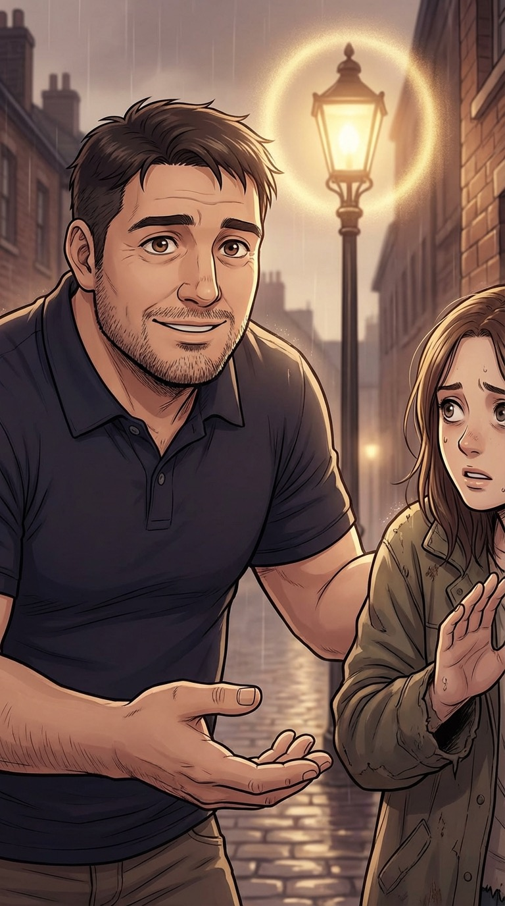
【中景 · 暖光 · 柔焦】街灯下
朱江温和地向女孩伸出手。
刚才那个三秒放倒三人的狠角色消失了。面前只是一个眼神温暖、络腮胡有点扎的中年大叔。
"没事了。来，我送你回家。"
菩萨心肠：暴力只是工具，保护才是目的。战斗结束，温柔回归。
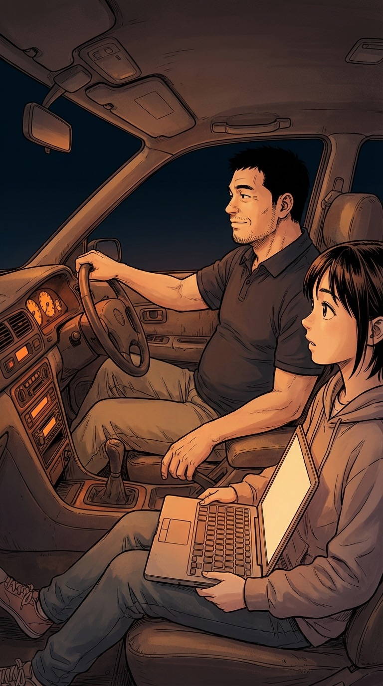
【中景 · 侧面 · 跟移】车内
车里安静了一阵。女孩还在从惊吓中恢复，双手紧紧抱着笔记本电脑。
朱江："笔记本没摔着吧？看你护它比护自己还紧。"
女孩噗嗤一笑："这里面有我三个月的模型训练数据……比我命值钱。"
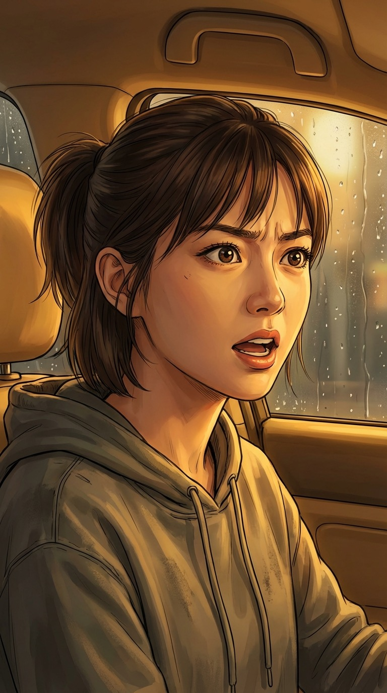
【特写 · 正面 · 固定】副驾驶
女孩叫林晚晚，28岁，某AI公司的算法工程师——前算法工程师。
"上个月裁员，整个算法组都砍了。说是'战略收缩'。"
"今天回公司拿东西，加班到凌晨整理数据，结果发现门禁卡被注销了，被锁在外面。"
眼神里有委屈，但更多的是不甘心。这不是一个会被打倒的人。
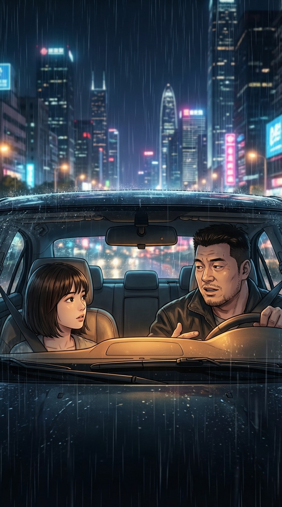
【双人中景 · 车外俯拍 · 固定】透过前挡风玻璃
话匣子一开就收不住了。两个人从AI行业现状聊到了技术路线。
林晚晚："我写的推荐模型其实很强的，但公司拿去做了什么？做了个广告推荐系统！把用户当韭菜割！"
朱江："那你想做什么？"
林晚晚认真地看着前方："我想做一个真正理解人的AI。不是为了卖广告，是真的理解。"
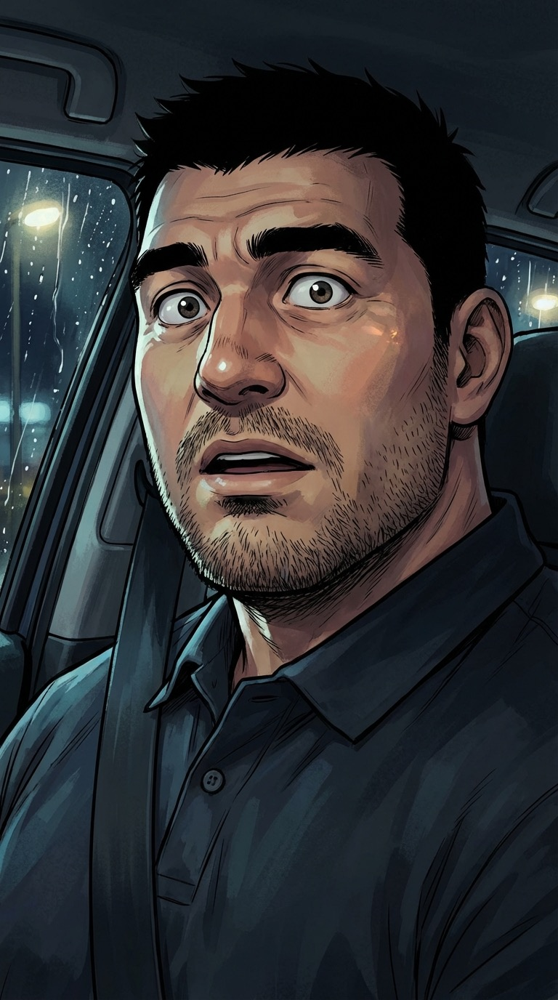
【极特写 · 侧面 · 固定】朱江表情
朱江的手在方向盘上微微收紧。
他的表情发生了细微的变化——嘴角的弧度消失了，取而代之的是一种被击中的认真。
（"真正理解人的AI"……）
（这不就是我写在商业计划书第一页的东西吗。）
（这个世界是不是有bug？怎么一个凌晨接的代驾单，能遇到和我想法一模一样的人？）
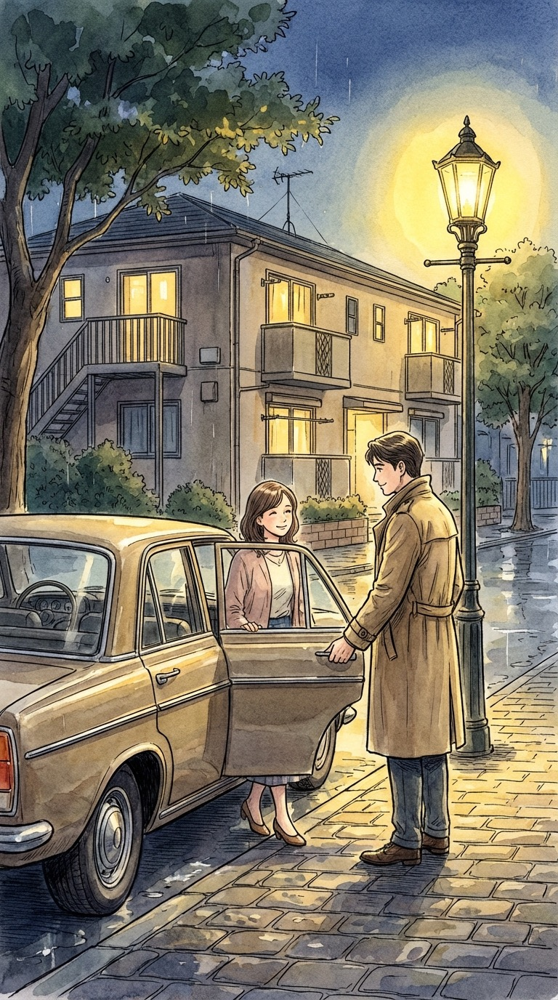
【全景 · 暖色调 · 固定】小区门口
到了林晚晚住的小区。普通老旧的住宅楼，六楼没电梯。
朱江下车帮她开门，像个体面的司机——不，像个体面的绅士。
林晚晚："谢谢你……代驾师傅。你叫什么？"
朱江："朱江。"
林晚晚："朱江。好的，朱师傅，今晚真的谢谢你。"
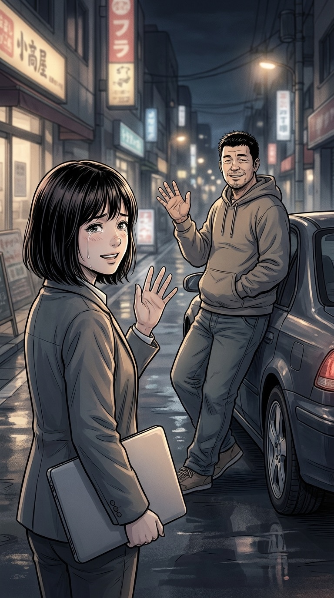
【中景 · 暖色 · 固定】分别
林晚晚转身挥手，笔记本夹在腋下，笑容真诚。
朱江靠在车上，随意地挥了挥手。嘴角不自觉地上翘了一下。
（职业素养告诉我不该对乘客产生任何私人想法。）
（创业素养告诉我刚才那段对话的含金量很高。）
（男人的直觉告诉我……算了，我没有男人的直觉，我只有代驾司机的直觉。）
⚡ 决策点 2：林晚晚想创业但没钱没资源
A. 直接说"我也在做AI，一起干"
B. 给她一些建议和资源，但不暴露自己的计划
✅ 朱江的选择：C
默默帮她对接几个技术圈朋友。做而不说。
🧠 灵魂解析
菩萨心肠想帮，但INTP的谨慎不允许轻易暴露全部底牌。朱江信任的建立是渐进的——不操控人，让她自己成长。帮忙的方式是"给钥匙不给答案"。
暴露偏好：朱江帮人的方式——做而不说，给资源不给答案。
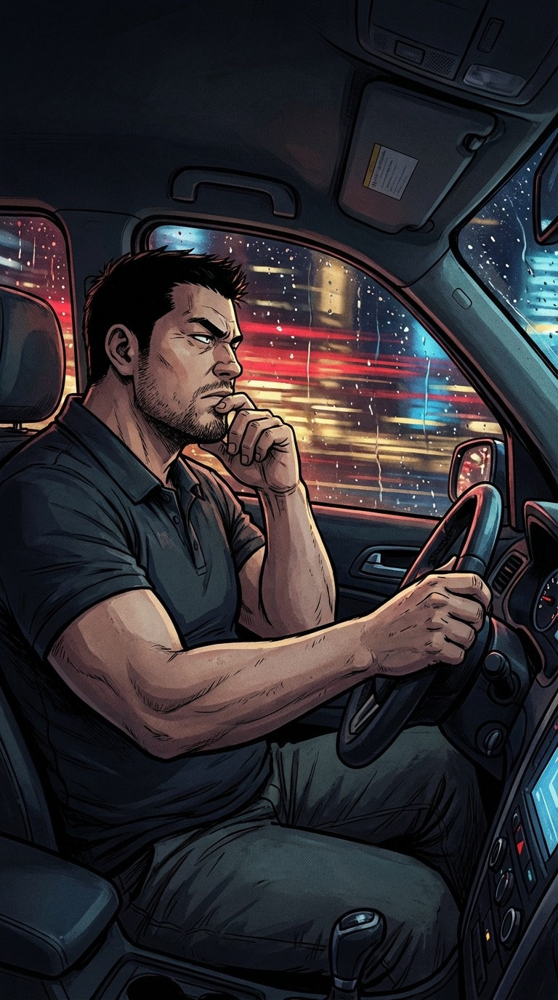
【中景 · 侧面 · 缓移】车内独处
送完林晚晚，朱江没有接下一单。他把车停在路边，安静地想了很久。
城市的灯光在车窗上流过，像时间的河。
（"真正理解人的AI"……她说的和我想的，连措辞都一样。）
（是巧合吗？这个世界不存在巧合，只存在还没被发现的因果链。）
（——黑客的职业病。）
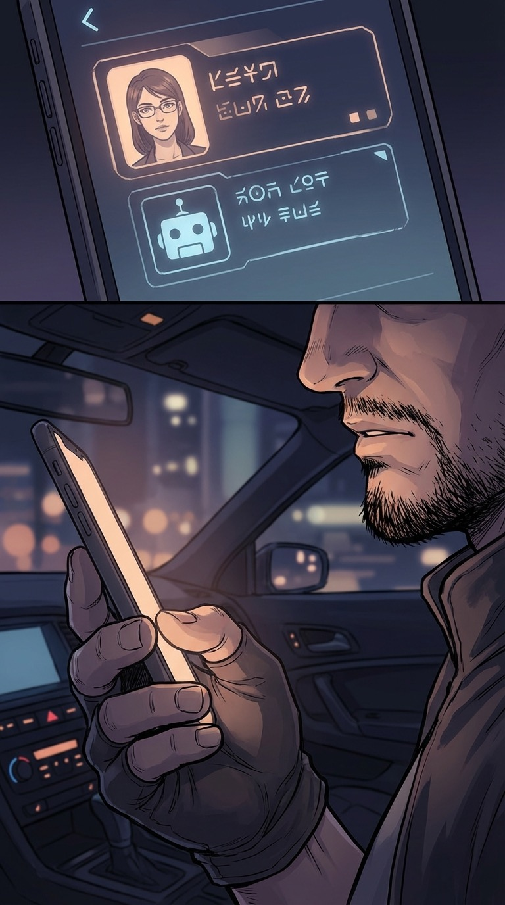
【特写 · 俯拍 · 固定】手机屏幕
朱江打开通讯录，给林晚晚发了一条微信。
"我有几个做算法的朋友，你要是有需要可以找我。——代驾朱师傅"
（就这样。先递一把钥匙，不急。看她自己怎么用。）
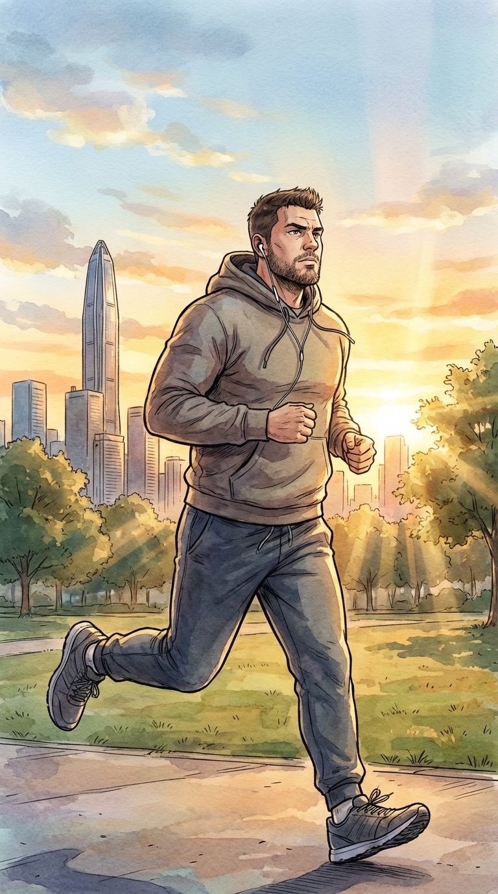
【全景 · 跟移 · 金色光线】清晨公园
第二天清晨六点。深圳湾公园。
朱江在跑步。戴着耳机，穿着普通的运动衣。看起来像个中年养生大叔。
但如果仔细看——步频精确到每分钟180步，呼吸节奏完美的2:2配比，跑姿的重心控制毫无多余晃动。
这不是在跑步。这是在执行标准化体能维护方案。
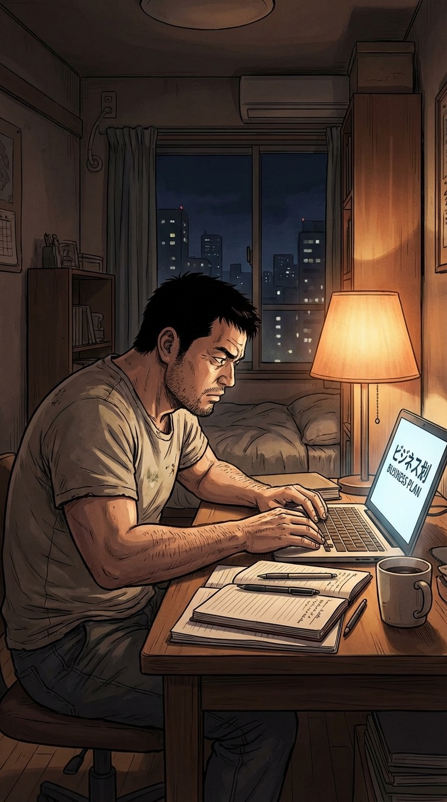
【中景 · 暖光 · 固定】小公寓深夜
白天代驾，晚上写创业方案。这是朱江的双重生活。
一居室的出租屋里，书桌上堆满了笔记本和技术文档。笔记本电脑屏幕的蓝光打在他脸上。
（如果告诉赵铁柱，龙隐退役后的战场变成了一张Excel表格，他大概会笑出猪叫。）
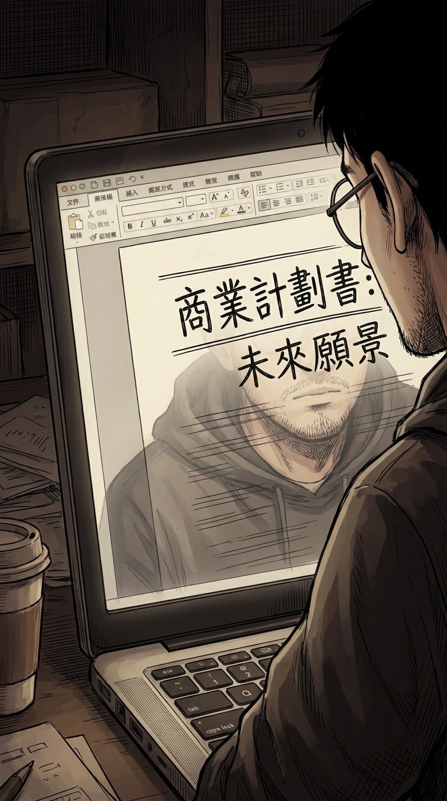
【极特写 · 屏幕反射 · 固定】笔记本屏幕
屏幕上是一份商业计划书的大纲。
标题：「构建人与AI和谐共生的新文明时代」
下面写着：愿景——成为全球最大的AIGC娱乐内容平台。
（当年的朱江想改变战场的规则。现在的朱江想改变世界的规则。）
（本质上是一样的——找到系统的漏洞，然后用它做正确的事。）
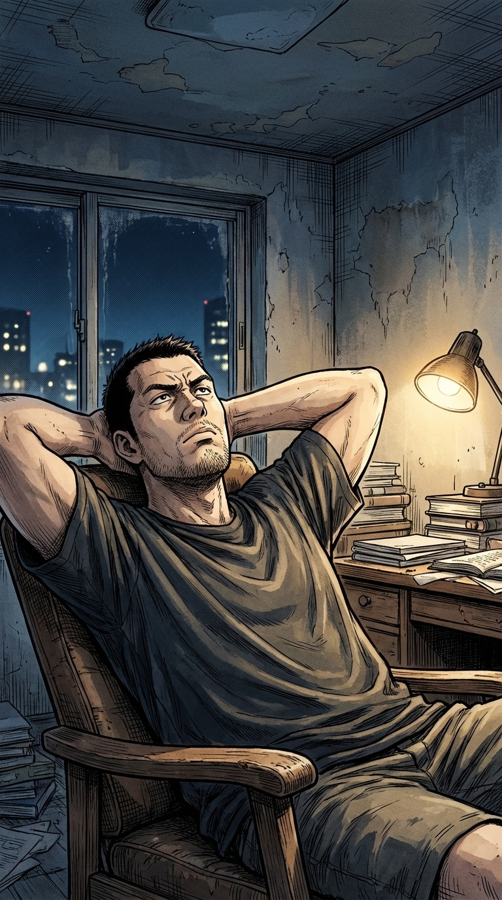
【中景 · 低角度仰拍 · 固定】书桌旁
凌晨三点半。朱江往后一靠，双手枕在脑后，盯着天花板。
（还差什么？技术有方向，市场有验证，商业模型跑得通。）
（差一个人。一个能把我脑子里那些模糊的算法直觉变成代码的人。）
（……那个叫林晚晚的女工程师，训练数据的处理方式很聪明。如果她的模型架构能力也这么强——）
（别想了。代驾司机不配有合伙人的妄想。）
（但创业者可以有。）
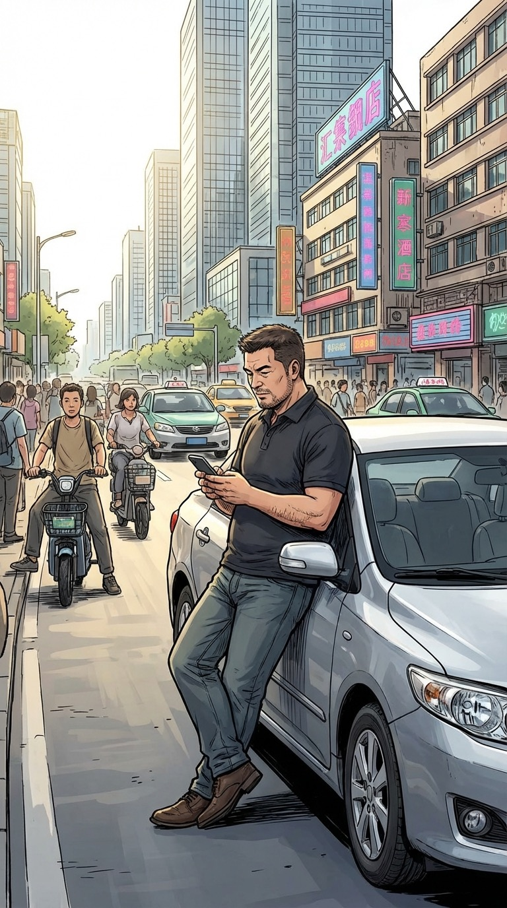
【中景 · 平视 · 固定】白天街头
下午两点，深圳科技园附近。朱江靠在车上刷手机，等下一单。
周围都是西装革履的互联网人来来往往。没人多看他一眼。
（这片区有14家AI公司，其中3家用的核心算法和我的思路撞了。市场留给我的时间不多了。）
（但我还在等。等一个对的时机，和一个对的人。）
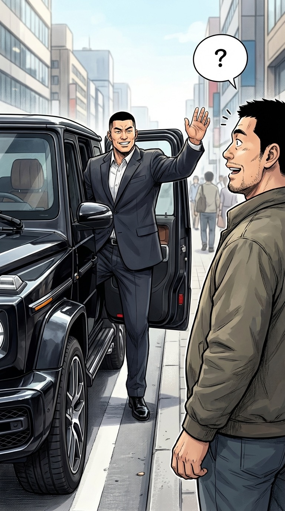
【全景 · 平视 · 固定】街边
一辆黑色奔驰GLS停在旁边。车门推开，下来一个寸头大汉——一米八五，肩宽背厚，名牌西装遮不住军人体态。
赵铁柱。曾经的战友，现在是深圳最大安保公司的老板。
"操——朱江？！真是你？！"
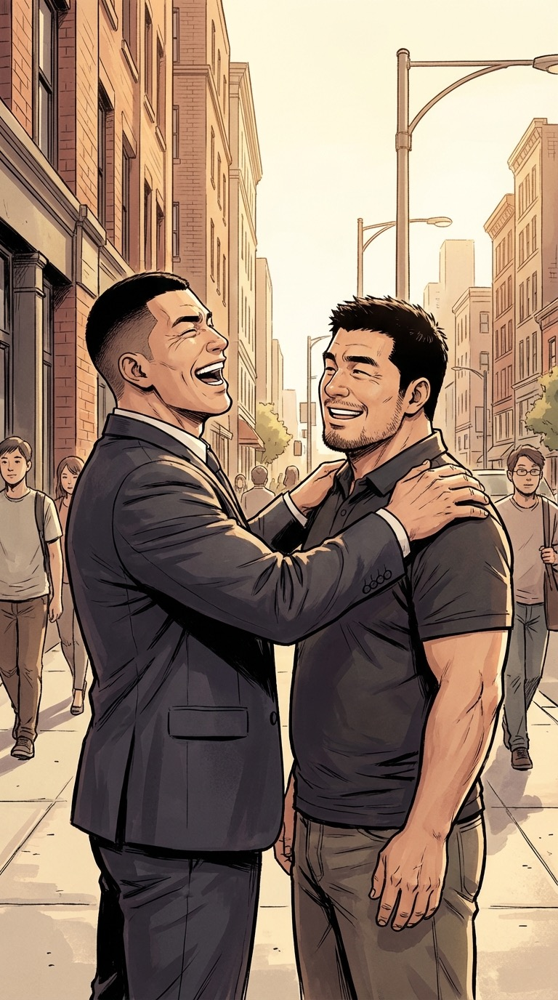
【中景 · 正面 · 固定】人行道
赵铁柱一把抓住朱江的肩膀，笑得像个二百斤的孩子。
"龙隐！我找你小半年了！你电话换了、微信换了、人也消失了——你搁这当代驾呢？？"
朱江拍了拍他的手臂："小声点。我现在叫朱江。朱江。"
"朱江个屁！你是龙隐！"
"嘘。"
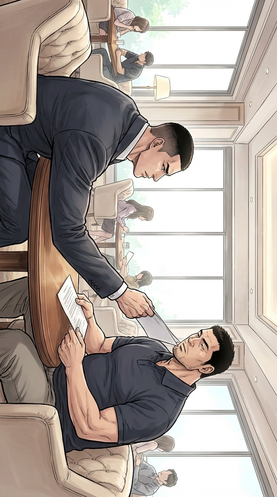
【中景 · 侧面 · 固定】咖啡厅
赵铁柱把朱江拖进咖啡厅，一份合同推到面前。
"安全顾问。年薪五百万。不用坐班，一个月来两次就行。求你了。"
"我现在的客户——地产大佬、上市公司老板，他们需要的是你这个级别的人。龙隐的名号放出去，单子能排到明年。"
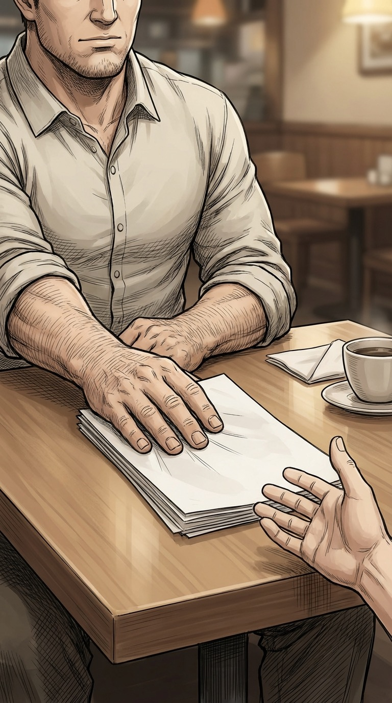
【特写 · 俯拍 · 固定】桌面
朱江端起咖啡喝了一口，然后把合同推了回去。
"铁柱，我退役的时候就说过。那些东西，留在过去了。"
赵铁柱："你现在跑代驾一单挣20块，我出500万，你跟我说'留在过去了'？"
朱江笑了："你知道我为什么退役吗？因为我找到了比战场更有意思的事。"
⚡ 决策点 3：老战友年薪500万邀请
A. 接受，先赚钱再说创业的事
B. 拒绝，彻底告别过去
✅ 朱江的选择：C
拒绝固定职位，但答应偶尔帮忙。保持关系，不回圈子。
🧠 灵魂解析
使命驱动 > 金钱驱动——500万很多，但不是朱江要走的路（拒绝A）。但他也不会烧桥——连续创业者深知人脉的价值，赵铁柱是值得保持的连接（拒绝B的绝对性）。
暴露偏好：朱江的资源观——不放弃任何可能有用的连接，但不被连接绑架。
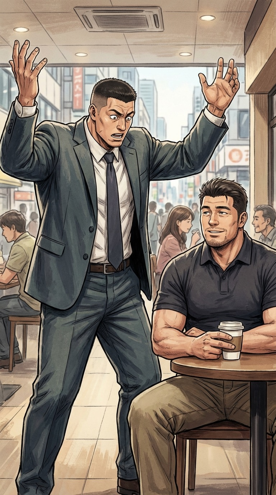
【中景 · 正面 · 固定】咖啡厅
赵铁柱站起来，一脸不可思议："龙隐啊龙隐，当年单枪匹马端了三个据点的人，现在最大的战斗是跟导航软件吵架？"
朱江："导航软件比敌人难对付多了。敌人至少有逻辑。"
赵铁柱被噎了一下，忍不住笑了。
朱江："这样吧，固定职位不行。但你要是遇到搞不定的事，给我打电话。我免费。"
"免费？你他妈月入三千还跟我谈免费？"
"战友之间谈钱伤感情。"
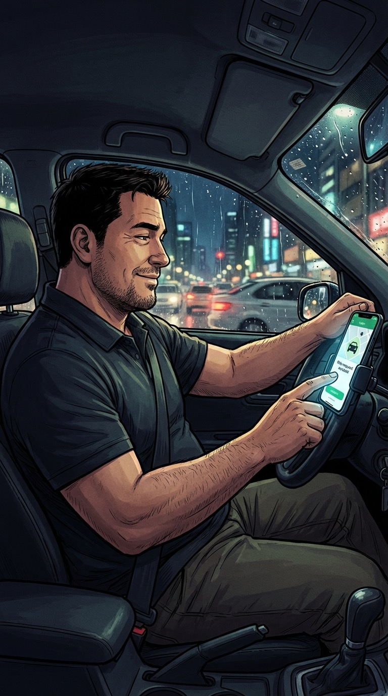
【中景 · 侧面 · 固定】夜晚车内
夜幕降临。朱江又坐回了驾驶座。
代驾APP提示音响起。新订单。
（拒绝500万的当晚，第一时间打开代驾APP。月入三千的代驾司机，刚拒了年薪五百万的offer。）
（这大概就是理想主义的代价。贵得离谱，但……不后悔。）
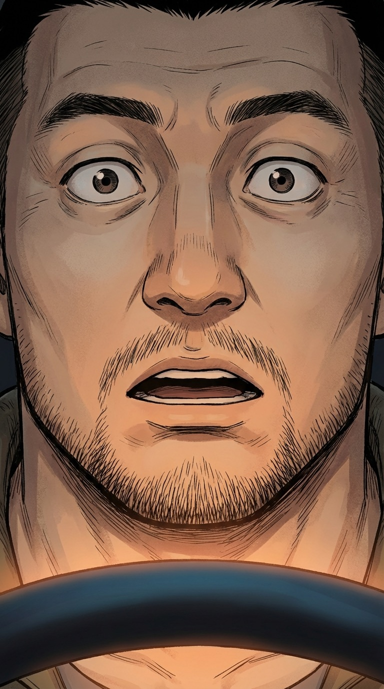
【特写 · 正面 · 固定】朱江表情
到达接单地点。副驾车门打开的瞬间——
朱江的表情定格了。
林晚晚："哎？朱师傅？？"
朱江："……这个世界真的有bug。"
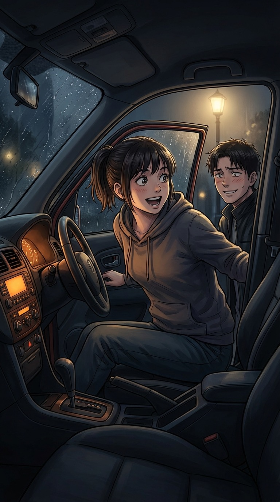
【中景 · 暖色 · 固定】车内
林晚晚一脸惊喜地跳上车。
"太巧了吧！朱师傅你还跑这片区？"
"……嗯。缘分。"
（深圳400万代驾司机里，她第二次打到我的车。概率是……不，别算了。有些事不能用概率解释。）
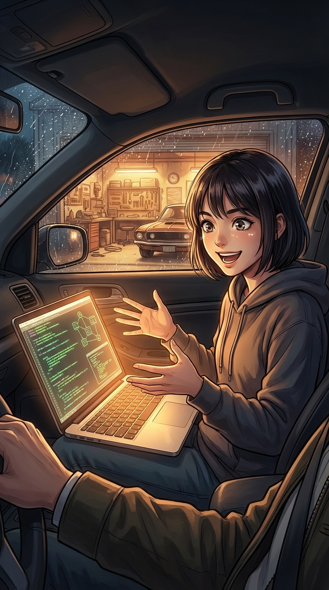
【中景 · 副驾视角 · 固定】车内
林晚晚兴奋地翻开笔记本电脑。
"朱师傅你看！你上次介绍的那个朋友帮了大忙！我的模型精度提升了12%！"
屏幕上密密麻麻的代码和神经网络架构图。朱江余光扫了一眼——
（Transformer变体？不对，她改了attention机制……这个设计很巧妙。比我预想的强。）
"看不太懂，但感觉很厉害的样子。"
（演技满分。）
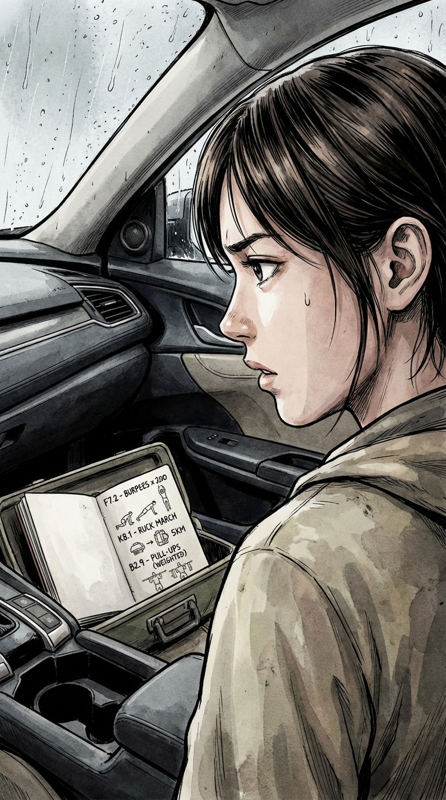
【特写 · 俯拍 · 固定】中控台
林晚晚无意中瞥见了中控台上的小笔记本。
翻开的那页赫然写着一份详细的体能训练计划——
「0530 5KM配速跑 / 0600 力量训练×3组 / 0700 战术复盘……」
她的眼神变了。
（代驾司机的训练计划……写"战术复盘"？）
⚡ 决策点 4：林晚晚问"你到底是谁"
A. 坦白全部过去
✅ 朱江的选择：B
半真半假："以前当过兵，退伍了。"
C. 转移话题："你不是更想聊你的模型吗？"
🧠 灵魂解析
朱江不撒谎——诚信是底线。但INTP的信息控制本能不允许一次暴露全部。"当过兵"是事实，但不是全部事实。这是朱江的信任梯度：真话但不是全部真话，随信任加深逐步展开。
暴露偏好：信任是渐进的。给出的信息量与信任深度成正比。
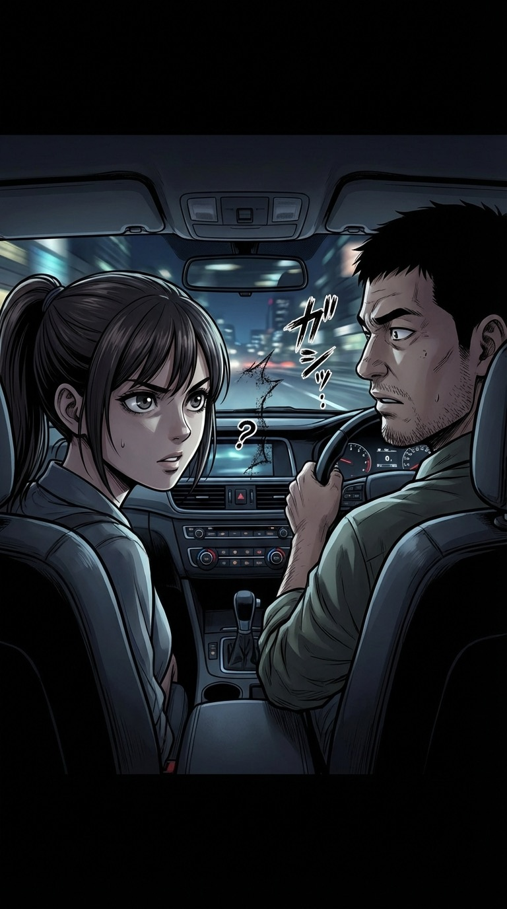
【双人特写 · 正面 · 固定】车内对视
林晚晚直视他的眼睛："朱师傅……你到底是谁？代驾司机不会三秒放倒三个人，也不会写'战术复盘'。"
朱江沉默了三秒。
"以前当过兵。退伍了。现在就是个普通人。"
"当过兵？就这？"
"就这。"
林晚晚显然不信，但她没有追问。
"好吧。但你欠我一个完整版的故事。"
"等你的模型准确率到90%，我就告诉你。"
"成交。"
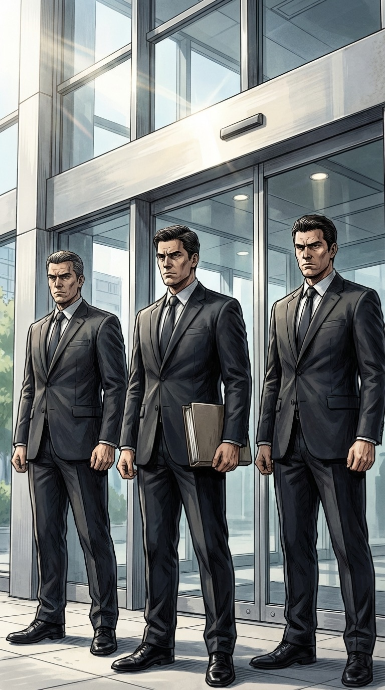
【中景 · 微仰 · 固定】办公楼门口
三天后。林晚晚的前公司终于动手了。
三个西装革履的"商务人士"堵在她租的共享办公室门口。为首的戴着金丝眼镜，笑容客气但眼神冰冷。
"林工，公司让我来跟你聊聊竞业协议的事。这份文件，今天必须签。"
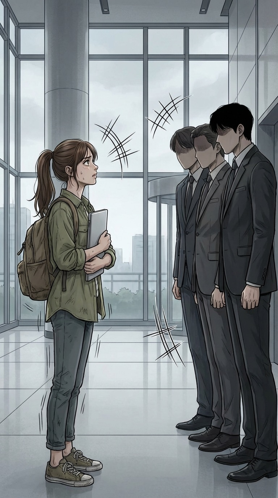
【中景 · 平视 · 固定】办公楼大厅
林晚晚退后一步，但没有跑。
"我离职时已经签过离职协议了。竞业条款不适用于被裁员的情况，这是劳动法明确规定的。"
金丝眼镜推了推镜框："林工，法律是法律，现实是现实。你的模型用了公司的训练数据，这个说不清楚吧？"
林晚晚的手在发抖——但不是因为害怕，是因为愤怒。那些数据是她一条一条标注的。
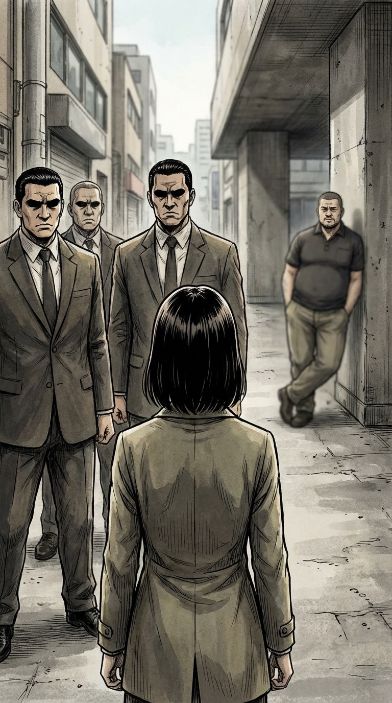
【远景 · 林晚晚背后 · 固定】大厅全景
大厅的柱子后面，一个穿深色polo衫的身影靠在那里，手插在口袋里。
朱江已经在这里了。
（我只是路过。路过。完全是巧合。）
（……好吧，我跟踪了她的日程。但这叫"保护性侦察"，不叫跟踪。我们部队管这个叫"预防性部署"。）
（对自己撒谎的感觉真差。我就是担心她。）
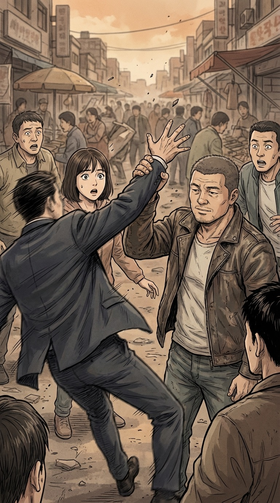
【动态特写 · 仰拍 · 速度感】交锋瞬间
金丝眼镜身边的壮汉伸手推了林晚晚一把——
一只手从侧面闪出，精准地卡住了壮汉的手腕。力道不大，但壮汉的表情瞬间扭曲。
朱江轻声说，语气平淡得像在念天气预报：
"手，收回去。"
全场安静。
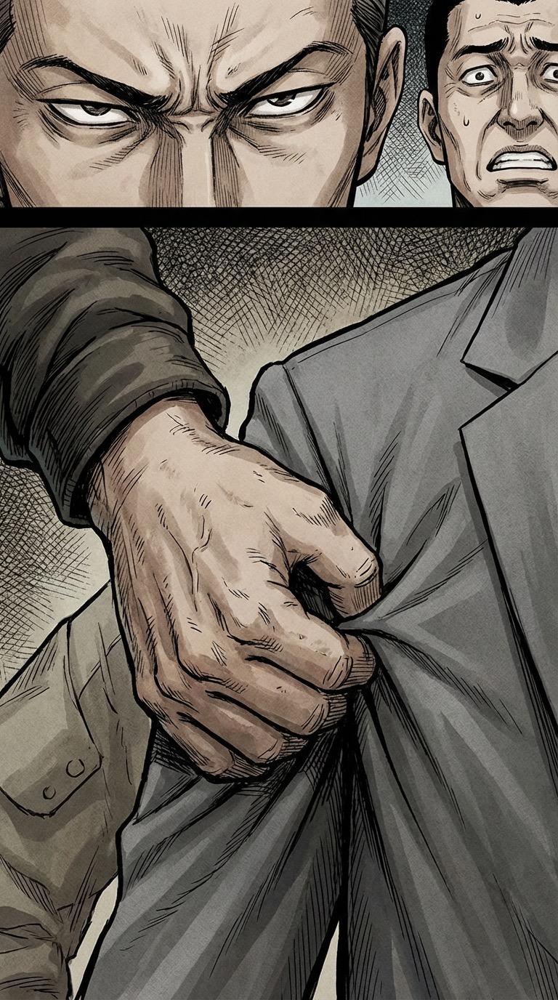
【极特写 · 手部 · 浅景深】手腕
朱江的手——粗糙，有老茧，指节比普通人粗一圈。
壮汉的手腕在他的五指间纹丝不动。
金丝眼镜看着这一幕，笑容消失了。他见过练家子，但这个矮壮男人给他的感觉不是"练家子"——是"危险"。
⚡ 决策点 5：对方叫来更多人
A. 全部放倒，展示压倒性实力
B. 只控制住领头的，让其他人自己退
C. 拿出手机："我录了像。你们公司叫什么来着？"
✅ 朱江的选择：B→C组合
先控制领头人（霹雳手段），然后用录像威慑（智取 > 力取）。
🧠 灵魂解析
黑客基因——理解系统：法律比拳头有用。菩萨心肠——不想真伤人。创业者思维——用最小成本解决问题。找到杠杆点，而非蛮力。这不是战场，不需要龙隐的方式。朱江的方式更高效。
暴露偏好：朱江解决问题的方式——找到杠杆点，而非蛮力。
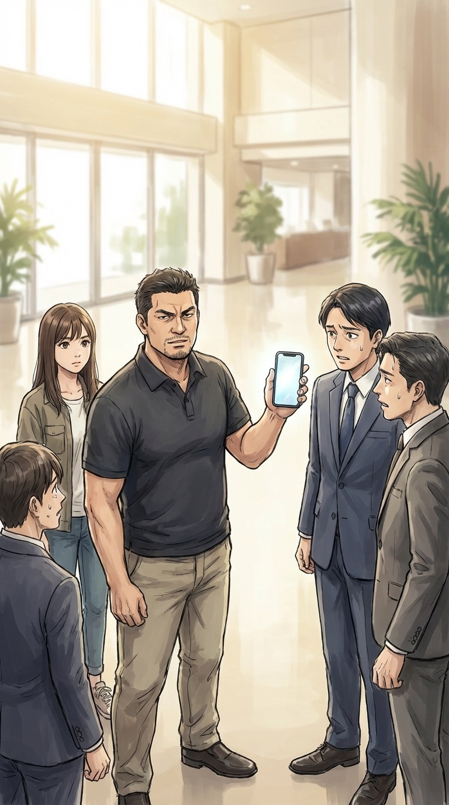
【中景 · 正面 · 固定】大厅
朱江松开壮汉的手腕，不紧不慢地掏出手机。
"刚才的过程我都录了。推搡行为，构成民事侵权。你们是……"他看了眼金丝眼镜的胸牌，"锐思科技的人？"
"这段视频发到微博，标题就叫'被裁女工程师遭前公司派人威胁'。你们猜，阅读量会有多少？"
金丝眼镜的脸绿了。
"当然，如果你们现在离开，今天的事就没发生过。大家都是体面人。"
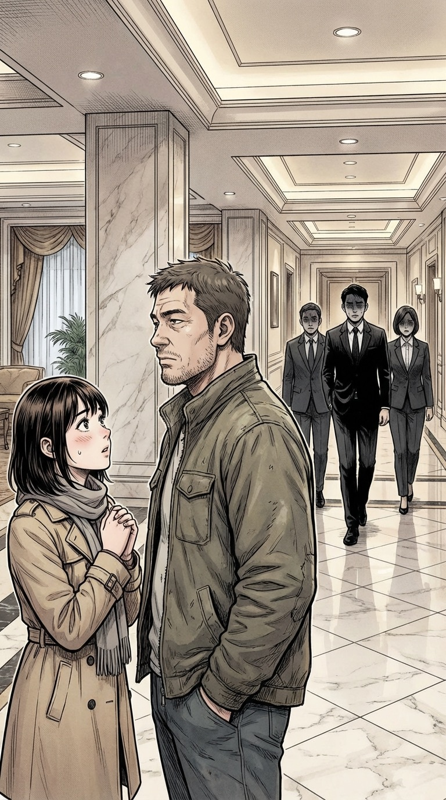
【中景 · 背影 · 跟移】大厅出口
三个人灰溜溜地走了。金丝眼镜回头看了一眼朱江，眼神里有恨意，但更多的是忌惮。
朱江把手插回口袋，表情恢复了平淡。
（问题解决。成本：0元。伤亡：0人。耗时：90秒。）
（龙隐的方式：全部放倒。耗时：10秒。后果：被监控拍到，面临起诉。）
（朱江的方式更好。龙隐退役了，但他教会了我一件事——最强的武器不是拳头，是让对手知道你有拳头但不用。）
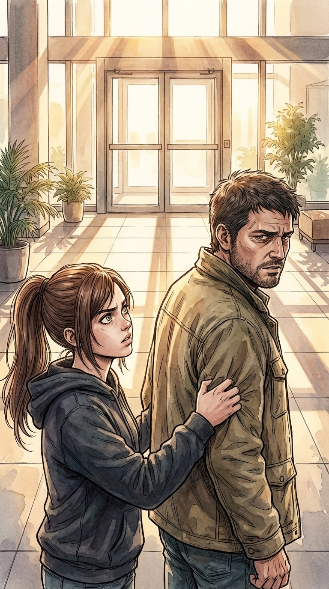
【中景 · 侧面逆光 · 固定】大厅门口
朱江转身要走。一只手抓住了他的衣袖。
林晚晚眼眶有点红："你又出现了。每次我有麻烦你都出现。"
"你不只是代驾司机对不对？"
阳光从玻璃门照进来，在两个人之间拉出长长的影子。
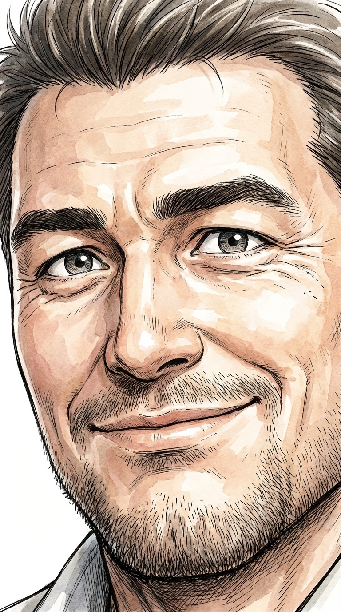
【特写 · 正面 · 柔光】朱江的笑
朱江看着她，笑了。
不是代驾司机的职业微笑，不是龙隐的冷峻，而是一个真诚的、有点不好意思的笑。
"我确实不只是代驾司机。"
林晚晚屏住呼吸。
"我还是个创业者。"
林晚晚："……就这？"
"走，去吃宵夜。聊聊你的模型架构，我有些想法。"
"等等——你看得懂模型架构？？你不是说你'看不太懂'吗？？"
"……走不走嘛，我请客。"
⚡ 决策点 6：合伙创业的最终决定
A. 正式合伙，两人一起创业
B. 投资她的项目，自己做另一个方向
C. 先以朋友身份协作，不急着定关系
✅ 朱江的选择：C → 渐进到A
先协作看默契，自然演变成合伙。试探→信任→承诺，不跳步。
🧠 灵魂解析
INFP感性说"这就是对的人"。INTP理性说"别冲动，观察一下"。朱江的合伙人选择极其慎重——创业经验教训太多了。不会冲动，但一旦认定会全力投入。信任的建立需要时间和事件来验证。
暴露偏好：朱江的合作观——试探→信任→承诺，绝不跳步。
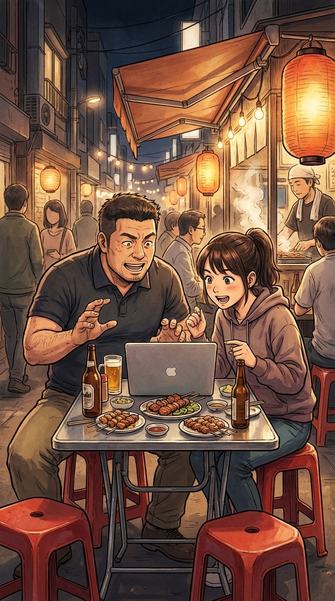
【中景 · 暖色 · 固定】深夜路边摊
深夜的路边烧烤摊，塑料凳，啤酒，满桌羊肉串。
一台笔记本电脑摊在油渍斑斑的桌面上，屏幕上是半成形的商业计划书。两个人凑在一起，争论得热火朝天。
林晚晚："你这个用户增长模型太保守了！第一年百万级用户完全可以做到！"
朱江："你是工程师思维。用户获取成本不是你以为的那样——"
"你一个代驾司机懂什么用户获取成本！"
"……"
"对不起，但你确实是代驾司机。"
"我在考虑要不要提前告诉你我的完整版故事。"
"模型精度还没到90%呢。"
"那就先喝酒。"
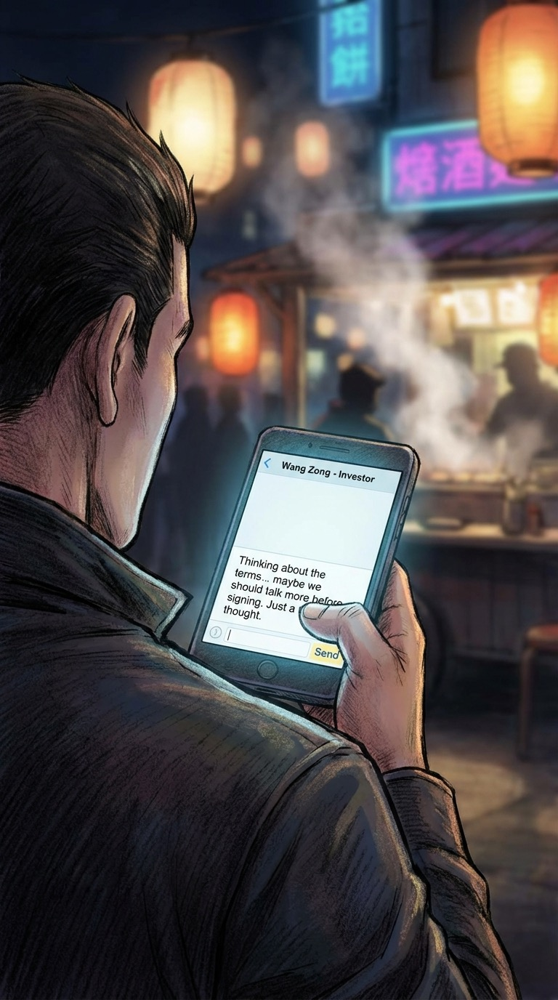
【特写 · 过肩 · 浅景深】手机
林晚晚去洗手间的间隙，朱江拿起手机，打开了一个尘封的对话框。
收件人：王总——就是那天醉酒的投资人。
他打了一行字：「王总，之前的term sheet，我想重新聊聊。方便的话约个时间。」
拇指悬在发送键上方，停了三秒。
（按下这个键，代驾司机朱江就要变成创业者朱江了。）
（有什么好犹豫的。你本来就是。）
发送。
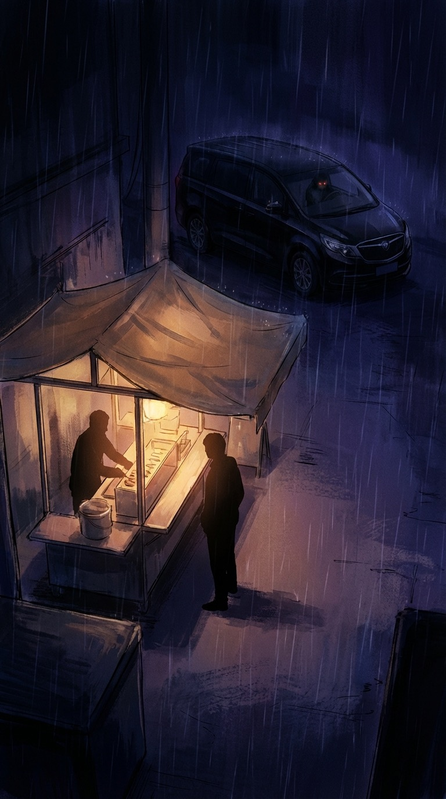
【远景 · 全景 · 固定 · 冷色调】街道全景
路边摊的暖光把两个人的剪影拉得很长。
林晚晚回来了，继续敲键盘。朱江给她倒了杯啤酒。普通的深夜，普通的烧烤摊。不普通的两个人。
——三百米外，一辆黑色别克GL8静静地停在暗处。车灯熄灭，驾驶座有一星烟火忽明忽暗。
有人在拍照。
— 第一章 · 完 —
第二章预告：《暗流》
林晚晚的模型取得突破——但她不知道，她的前公司并没有放弃。
赵铁柱的一通电话，让朱江意识到：有些过去，不是你想告别就能告别的。
而那辆GL8里的人，终于亮出了底牌。
"龙隐先生，好久不见。"
"最强的武器不是拳头，
是让对手知道你有拳头但不用。"